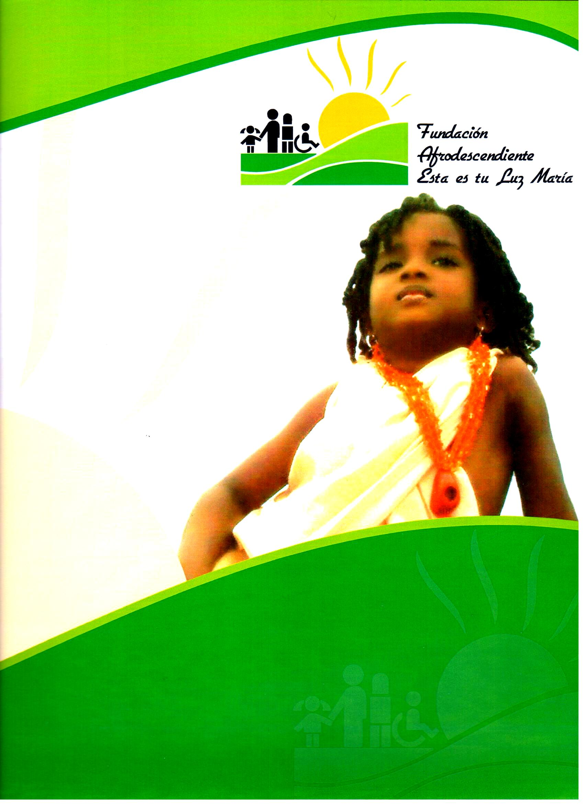

MISSION
To be a social institution, non-profit that protects the rights of children, adolescents, young people, adults and the elderly, at high risk from marginal areas of the city, situations of physical and moral danger, which provides a warm welcome, with nutritional support programs, school at internal and external level, training in arts and crafts, career guidance, attention in psychology, health, nutrition, phonoaudiology, social work, education in learning problems, guidance to their families in the search for the improvement of the quality of life, from a child rights perspective that allows them to strengthen their being for a suitable social development.
VIEW
Within five years, be a leading institution in individual, family, social and legal development processes that optimizes the life project of all unprotected communities, guaranteeing the fundamental rights of children, adolescents, youth, adults and elderly people like: to development, to survival, to protection and participation seeking improvement in their quality of life, converted into a model institution of identification for the rest of the community, especially for those who work with children, co-financed by government institutions national, departmental, municipal or national and international NGOs and our own effort.
OUR PROFETIONALS
Our foundation has a group of highly trained professionals, with experience and committed to the development of the programs we offer such as: Doctors, dentists, social worker, psychologists, physiotherapists, environmental engineer, systems engineer, lawyers, civil engineer, accountant , health promoters among others.